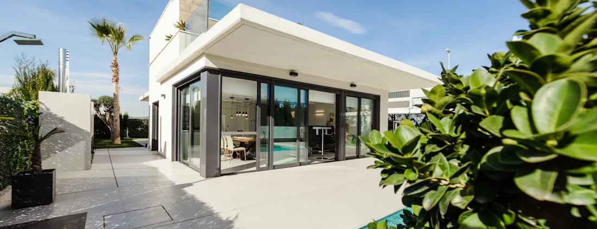
Gallery
Outdoor spaces, captioned honestly
Fourteen photographs, filterable by build type. Every caption describes what is in the frame — not what the page would like to sell you.
A gallery is only useful if you can trust the captions
Most contractor galleries are a grid of attractive photographs with confident labels underneath, and the labels are the part nobody checks. A caption reading Travertine pool deck, Parkland takes four seconds to write and carries three separate claims: the material, the work, and the address.
So this page does the boring version. Each caption says what is actually visible in the photograph. Each image is filed under the build types it genuinely shows. Nothing carries a city, because no photograph here has a verified location — and a geotag is a factual claim like any other.
If you want the written counterpart to this page, Projects is where the work is described rather than shown.
Browse
Fourteen photographs, seven build types
Filter by what you are actually planning. An image tagged with three categories is showing all three — that is usually how a yard works.
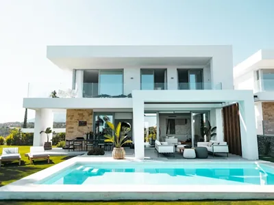
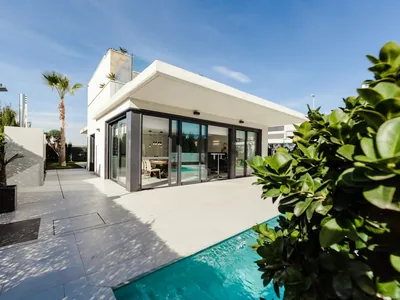

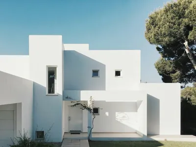
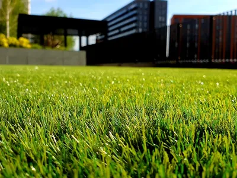
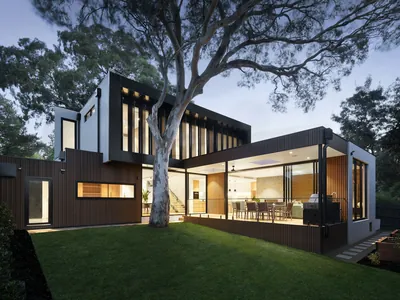
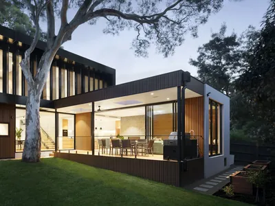
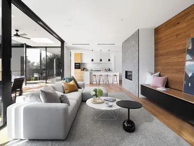
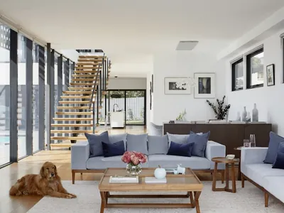
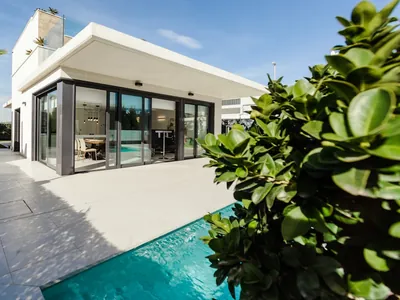
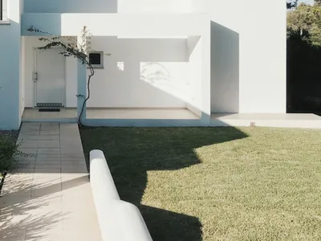
Nothing matches that filter. .
Not pictured
Three build types have no filter, because no photograph shows one
Seven honest categories rather than eleven with four padded out by something adjacent.
Driveways
Nothing in the library shows a driveway. Several photographs show paved surfaces, but a walkway beside a house is not a driveway, and filing it under one would be the exact caption error this page exists to avoid.
Outdoor Kitchens
No photograph shows a built-in cooking run, counter or appliance cut-out. One shows an indoor kitchen through a glazed wall, which is a different thing entirely.
Tiki Huts
The shade structures pictured are draped timber frames, not thatch. They are filed under Pergolas & Shade for that reason. A thatched roof looks nothing like them and should not be represented by them.
What we would rather show you
A photograph is the weakest evidence a contractor can offer, because it is the easiest to acquire from somewhere else. If you want to know how we build, ask for references you can telephone, or ask to walk a job while the ground is still open — an excavation tells you more about a contractor in five minutes than a gallery does in an hour. Projects sets out what to ask for.
Read the detail
Every category here has a page behind it
The photographs show the result. These explain how it is specified, sequenced and built.
Areas we serve
Where this kind of work gets built
Before you enquire
Questions about this gallery
Are these photographs of your own completed projects?
They are reference imagery. Each photograph shows the kind of space described by the category it sits under, and the caption says what is actually in the frame rather than what the page is selling. None is presented as a finished Arco job at a named address. When we publish our own project photography it will be labelled as such and tied to a written record on the Projects page.
Why is there no city or date on any photograph?
Because none has been verified, and a geotag is a factual claim like any other. Attaching a city to a photograph implies work completed at that address, which we will not assert without evidence. It is also worth knowing how common the opposite practice is: a contractor gallery captioned with city names is, more often than people expect, stock photography with local search terms attached.
Why do some build types have no photographs here?
Driveways, outdoor kitchens and tiki huts have no filter on this page because no photograph in our library actually depicts one. We would rather show seven honest categories than eleven where four are filled with something adjacent. Each of those build types has its own service page describing the work in detail.
What is the difference between the Gallery and the Projects page?
The Gallery is for looking: photography arranged to be browsed quickly, with as little text in the way as possible. Projects is for checking: written records of specific work, with scope, constraints, materials and outcome. One gives you an impression in ten seconds; the other is documentation. They are kept apart deliberately so that neither is mistaken for the other.
Can I ask to see something that is not shown here?
Yes, and it is a better question than anything a gallery can answer. Call and describe the space you have and what is not working about it. Depending on what is running at the time we can often arrange references you can call or a job in progress you can walk, which tells you considerably more about how a contractor builds than any photograph will.
Why are the images so small to download?
Deliberately. Every photograph is WebP, served at two widths with the browser picking the smaller one on a phone, and every image below the first screen is lazy-loaded so nothing downloads until you scroll to it. A gallery that ships a dozen full-resolution photographs at once is slow on exactly the mobile connection most people browse it from.
Bring us the space, not the photograph
The useful conversation starts with your yard and what is wrong with it — the orientation, the drainage, where the sun lands at four o'clock. A designer will visit and walk it with you.